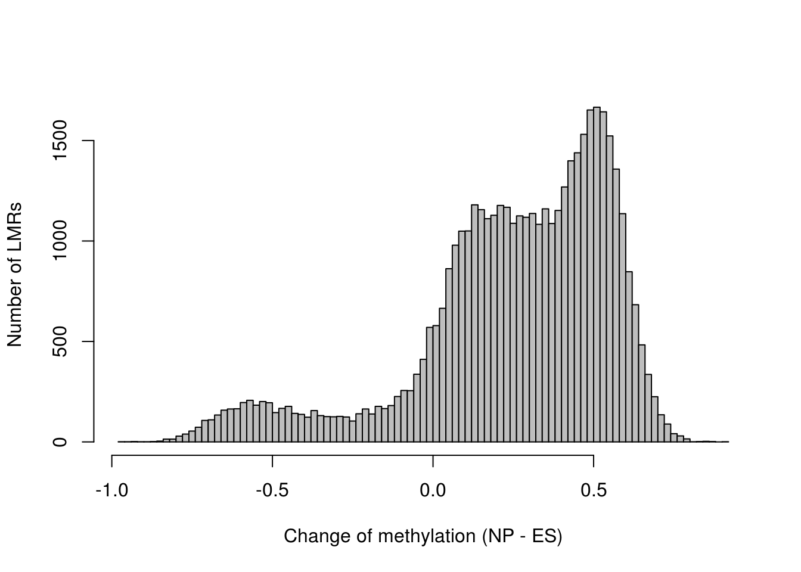
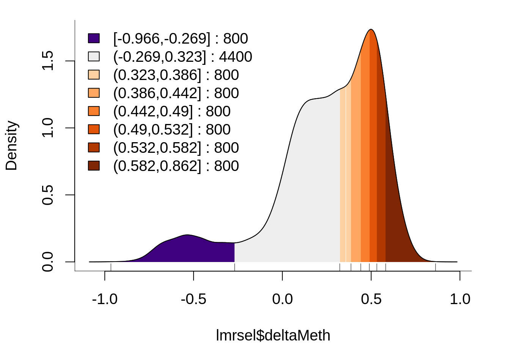
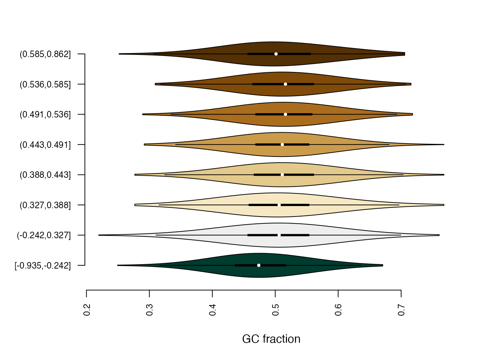
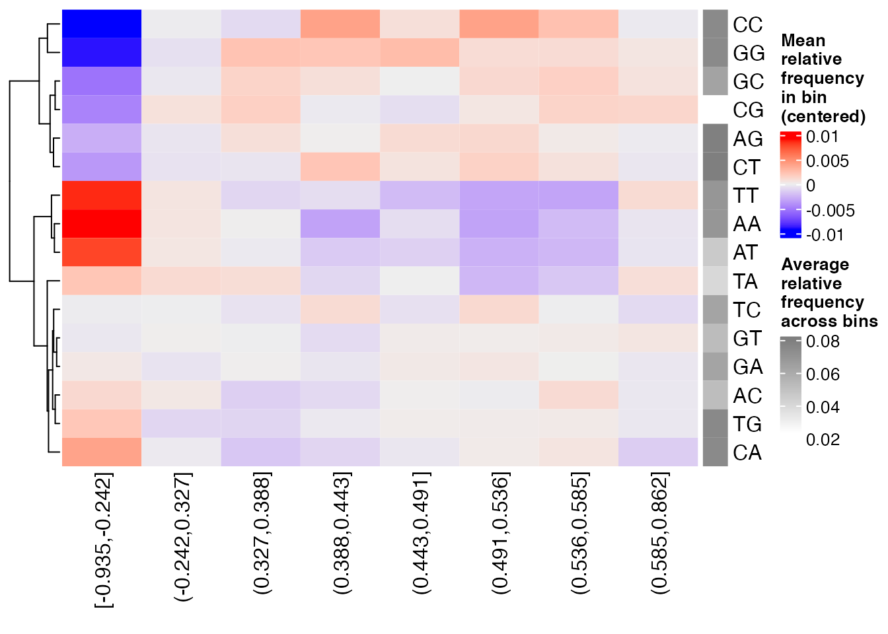
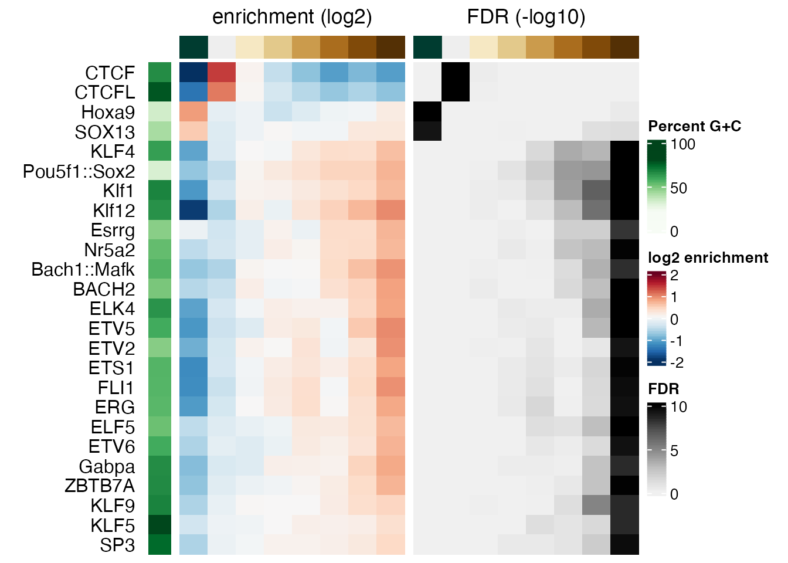
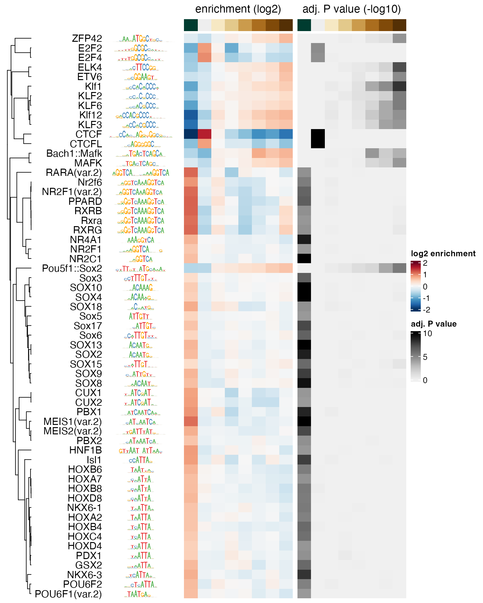
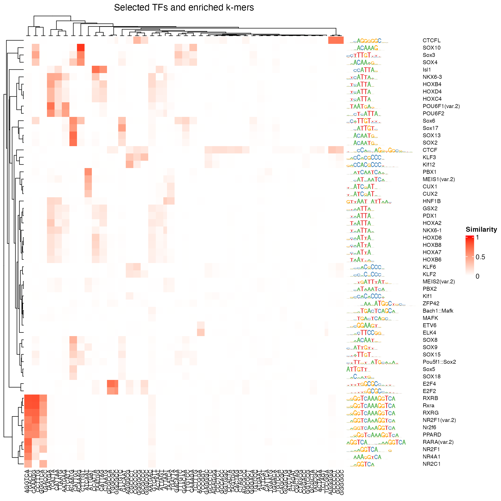

monaLisa - MOtif aNAlysis with Lisa
Dania Machlab, Lukas Burger, Charlotte Soneson, Michael Stadler
2021-10-22
Source:vignettes/monaLisa.Rmd
monaLisa.Rmd
Introduction
monaLisa is a collection of functions for working with biological sequences and motifs that represent the binding preferences of transcription factors or nucleic acid binding proteins.
For example, monaLisa can be used to conveniently find motif hits in sequences (see section @ref(findhits)), or to identify motifs that are likely associated with observed experimental data. Such analyses are supposed to provide potential answers to the question “Which transcription factors are the drivers of my observed changes in expression/methylation/accessibility?”.
Several other approaches have been described that also address this problem, among them REDUCE (Roven and Bussemaker 2003) and ISMARA (Balwierz et al. 2014). In monaLisa, we aim to provide a flexible implementation that integrates well with other Bioconductor resources, makes use of the sequence composition correction developed for Homer (Heinz et al. 2010) or stability selection (Meinshausen and Bühlmann 2010) and provides several alternative ways to study the relationship between experimental measurements and sequence motifs.
You can use known motifs from collections of transcription factor binding specificities such as JASPAR2020, also available from Bioconductor. Genomic regions could be for example promoters, enhancers or accessible regions for which experimental data is available.
Two independent approaches are implemented to identify interesting motifs:
In binned motif enrichment analysis (
monaLisa::calcBinnedMotifEnrR, see section @ref(binned)), genomic regions are grouped into bins according to a numerical value assigned to each region, such as the change in expression, accessibility or methylation. Motif enrichments are then calculated for each bin, normalizing for differences in sequence composition in a very similar way as originally done by Homer (Heinz et al. 2010). The binned motif enrichment approach was first introduced in Ginno et al. (2018) and subsequently applied in e.g. Barisic et al. (2019). To see more details on howcalcBinnedMotifEnrRresemblesHomer, check the function help page. We recommend using this function to do the binned motif enrichment analysis, since it corrects for sequence composition differences similarly toHomer, but is implemented more efficiently.monaLisa::calcBinnedMotifEnrHomerimplements the same analysis using Homer and therefore requires a local installation of Homer, andmonaLisa::calcBinnedKmerEnr(see section @ref(binnedkmers)) implements the analysis for k-mers instead of motifs, to study sequence enrichments without the requirement of known motifs.Randomized Lasso stability selection (
monaLisa::randLassoStabSel, see the stability selection vignette, monaLisa uses a robust regression approach (stability selection, Meinshausen and Bühlmann (2010)) to predict what transcription factors can explain experimental measurements, for example changes in chromatin accessibility between two conditions. Also this approach allows to correct for sequence composition. In addition, similar motifs have to “compete” with each other to be selected.
For both approaches, functions that allow visualization of obtained results are provided.
If you prefer to jump right in, you can continue with section @ref(quick) that shows a quick hypothetical example of how to run a binned motif enrichment analysis. If you prefer to actually compute enrichments on real data, you can find below a detailed example for a binned motif enrichment analysis (section @ref(binned)).
Installation
monaLisa can be installed from Bioconductor via the BiocManager package:
if (!requireNamespace("BiocManager", quietly = TRUE))
install.packages("BiocManager")
BiocManager::install("monaLisa")Quick example: Identify enriched motifs in bins
The quick example below, which we do not run, illustrates how a binned motif enrichment analysis can be performed in monaLisa. We assume that you already have extracted a set of peaks. The sequences of the peak regions are stored in a Biostrings::DNAStringSet (peak_seqs), and additionally each peak is associated with a numeric value (e.g., the change of methylation between two conditions, stored in the peak_change vector), that will be used to bin the regions before finding motifs enriched in each bin.
# load package
library(monaLisa)
# bin regions
# (peak_change is a numerical vector)
# (peak_change needs to be created by the user to run this code)
peak_bins <- bin(x = peak_change, binmode = "equalN", nElement = 400)
# calculate motif enrichments
# (peak_seqs is a DNAStringSet, pwms is a PWMatrixList)
# (peak_seqs and pwms need to be created by the user to run this code)
se <- calcBinnedMotifEnrR(seqs = peak_seqs,
bins = peak_bins,
pwmL = pwms)The returned se is a SummarizedExperiment with assays negLog10P, negLog10Padj, expForegroundWgt, pearsonResid, log2enr, sumForegroundWgtWithHits and sumBackgroundWgtWithHits, each containing a matrix with motifs (rows) by bins (columns). The values are:
-
negLog10P: the raw P value (\(-\log_{10} p\)) of a given motif enrichment in a given bin. Each P value results from an enrichment calculation comparing occurrences of each motif in the bin to its occurrences in background sequences, defined by the
backgroundargument (by default: sequences in all other bins).
-
negLog10Padj: Same as negLog10P but adjusted for multiple testing using the method of provided in the
p.adjust.methodargument, by default: Benjamini and Hochberg, 1995 (p.adjust(..., method="fdr")).
- expForegroundWgt: The expected number of regions in the bin containing a given motif.
-
pearsonResid: Standardized Pearson residuals, a measure of motif enrichment akin to a z-score for the number of regions in the bin containing the motif. The standardized Pearson residuals are given by
\(resid = (o - \mu)/\sigma\), where \(\mu\) is the expected count and \(\sigma\) the standard deviation of the expression in the numerator, under the null hypothesis that the probability of containing a motif is independent of whether the sequence is in the foreground or the background (see e.g. Agresti (2007), section 2.4.5). -
log2enr: Motif enrichments, calculated as: \(log2enr = log2((o + c)/(e + c))\), where \(o\) and \(e\) are the observed and expected numbers of regions in the bin containing a given motif, and \(c\) is a pseudocount defined by the
pseudocount.log2enrargument.
- sumForegroundWgtWithHits and sumBackgroundWgtWithHits are the sum of foreground and background sequences that have at least one occurrence of the motif, respectively. The background sequences are weighted in order to adjust for differences in sequence composition between foreground and background.
In addition, rowData(se) and colData(se) give information about the used motifs and bins, respectively. In metadata(se) you can find information about parameter values.
Binned motif enrichment analysis: Finding TFs enriched in differentially methylated regions
This example is based on an in vitro differentiation system, in which mouse embryonic stem (ES) cells are differentiated into neuronal progenitors (NP). In an earlier study (Stadler et al. 2011), we have analyzed the genome-wide CpG methylation patterns in these cell types and identified so called low methylated regions (LMRs), that have reduced methylation levels and correspond to regions bound by transcription factors.
We also developed a tool that systematically identifies such regions from genome-wide methylation data (Burger et al. 2013). Interestingly, a change in methylation of LMRs is indicative of altered transcription factor binding. We will therefore use these regions to identify transcription factor motifs that are enriched or depleted in LMRs that change their methylation between ES and NP cell states.
Load packages
We start by loading the needed packages:
library(GenomicRanges)
library(SummarizedExperiment)
library(JASPAR2020)
library(TFBSTools)
library(BSgenome.Mmusculus.UCSC.mm10)
library(monaLisa)
library(ComplexHeatmap)
library(circlize)Genomic regions of interest
monaLisa contains a file with genomic coordinates (mouse mm10 assembly) of LMRs, with the respective changes of methylation:
lmrfile <- system.file("extdata", "LMRsESNPmerged.gr.rds",
package = "monaLisa")
lmr <- readRDS(lmrfile)
lmr
#> GRanges object with 45414 ranges and 1 metadata column:
#> seqnames ranges strand | deltaMeth
#> <Rle> <IRanges> <Rle> | <numeric>
#> [1] chr1 3549153-3550201 * | 0.3190299
#> [2] chr1 3680914-3682164 * | 0.0657352
#> [3] chr1 3913315-3914523 * | 0.4803313
#> [4] chr1 3953500-3954157 * | 0.4504727
#> [5] chr1 4150457-4151567 * | 0.5014768
#> ... ... ... ... . ...
#> [45410] chrY 4196254-4196510 * | -0.020020382
#> [45411] chrY 4193654-4194152 * | -0.102559935
#> [45412] chrY 4190208-4192766 * | -0.031668206
#> [45413] chrY 4188072-4188924 * | 0.130623049
#> [45414] chrY 4181867-4182624 * | 0.000494588
#> -------
#> seqinfo: 21 sequences from an unspecified genomeWe can see there are 45414 LMRs, most of which gain methylation between ES and NP stages:
hist(lmr$deltaMeth, 100, col = "gray", main = "",
xlab = "Change of methylation (NP - ES)", ylab = "Number of LMRs")
In order to keep the computation time reasonable, we’ll select 10,000 of the LMRs randomly:
Bin genomic regions
Now let’s bin our LMRs by how much they change methylation, using the bin function. We are not interested in small changes of methylation, say less than 0.3, so we’ll use the minAbsX argument to create a no-change bin in [-0.3, 0.3). The remaining LMRs are put into bins of 800 each:
bins <- bin(x = lmrsel$deltaMeth, binmode = "equalN", nElement = 800,
minAbsX = 0.3)
table(bins)
#> bins
#> [-0.935,-0.242] (-0.242,0.327] (0.327,0.388] (0.388,0.443] (0.443,0.491]
#> 800 4400 800 800 800
#> (0.491,0.536] (0.536,0.585] (0.585,0.862]
#> 800 800 800We can see which bin has been set to be the zero bin using monaLisa::getZeroBin, or set it to a different bin using monaLisa::setZeroBin:
# find the index of the level representing the zero bin
levels(bins)
#> [1] "[-0.935,-0.242]" "(-0.242,0.327]" "(0.327,0.388]" "(0.388,0.443]"
#> [5] "(0.443,0.491]" "(0.491,0.536]" "(0.536,0.585]" "(0.585,0.862]"
getZeroBin(bins)
#> [1] 2Because of the asymmetry of methylation changes, there is only a single bin with LMRs that lost methylation and many that gained:
plotBinDensity(lmrsel$deltaMeth, bins, legend = "topleft")
Note that the bin breaks around the no-change bin are not exactly -0.3 to 0.3. They have been adjusted to have the required 800 LMRs per bin.
Prepare motif enrichment analysis
Next we prepare the motif enrichment analysis. We first need known motifs representing transcription factor binding site preferences. We extract all vertebrate motifs from the JASPAR2020 package as positional weight matrices (PWMs):
pwms <- getMatrixSet(JASPAR2020,
opts = list(matrixtype = "PWM",
tax_group = "vertebrates"))Furthermore, we need the sequences corresponding to our LMRs. As sequences in one bin are compared to the sequences in other bins, we would not want differences of sequence lengths or composition between bins that might bias our motif enrichment results.
In general, we would recommend to use regions of similar or even equal lengths to avoid a length bias, for example by using a fixed-size region around the midpoint of each region of interest using GenomicRanges::resize. In addition, the resized regions may have to be constrained to the chromosome boundaries using trim:
summary(width(lmrsel))
#> Min. 1st Qu. Median Mean 3rd Qu. Max.
#> 9.0 213.0 401.0 512.9 676.0 5973.0
lmrsel <- trim(resize(lmrsel, width = median(width(lmrsel)), fix = "center"))
summary(width(lmrsel))
#> Min. 1st Qu. Median Mean 3rd Qu. Max.
#> 401 401 401 401 401 401We can now directly extract the corresponding sequences from the BSgenome.Mmusculus.UCSC.mm10 package
lmrseqs <- getSeq(BSgenome.Mmusculus.UCSC.mm10, lmrsel)and check for differences in sequence composition between bins using the monaLisa::plotBinDiagnostics function. “GCfrac” will plot the distributions of the fraction of G+C bases, and “dinucfreq” creates a heatmap of average di-nucleotide frequencies in each bin, relative to the overall average.
plotBinDiagnostics(seqs = lmrseqs, bins = bins, aspect = "GCfrac")
plotBinDiagnostics(seqs = lmrseqs, bins = bins, aspect = "dinucfreq")
From these plot, we can see that LMRs with lower methylation in NP cells compared to ES cells (bin [-0.935,-0.242]) tend to be GC-poorer than LMRs in other bins. A strong bias of this kind can give rise to false positives in that bin, e.g. enrichments of AT-rich motifs. In this example, the bias is however not very strong and the built-in sequence composition correction in monaLisa::calcBinnedMotifEnrR should be able to handle it.
Run motif enrichment analysis
Finally, we run the binned motif enrichment analysis.
This step will take a while, and typically you would use the BPPARAM argument to run it with parallelization using n cores as follows: calcBinnedMotifEnrR(..., BPPARAM = BiocParallel::MulticoreParam(n))). For this example however, you can just load the pre-computed results as shown below.
se <- calcBinnedMotifEnrR(seqs = lmrseqs, bins = bins, pwmL = pwms)In case you did not run the above code, let’s now read in the results:
se <- readRDS(system.file("extdata", "results.binned_motif_enrichment_LMRs.rds",
package = "monaLisa"))se is a SummarizedExperiment object which nicely keeps motifs, bins and corresponding metadata together:
# summary
se
#> class: SummarizedExperiment
#> dim: 746 8
#> metadata(5): bins bins.binmode bins.breaks bins.bin0 param
#> assays(6): negLog10P negLog10Padj ... sumForegroundWgtWithHits
#> sumBackgroundWgtWithHits
#> rownames(746): MA0004.1 MA0006.1 ... MA0528.2 MA0609.2
#> rowData names(5): motif.id motif.name motif.pfm motif.pwm
#> motif.percentGC
#> colnames(8): [-0.935,-0.242] (-0.242,0.327] ... (0.536,0.585]
#> (0.585,0.862]
#> colData names(6): bin.names bin.lower ... totalWgtForeground
#> totalWgtBackground
dim(se) # motifs-by-bins
#> [1] 746 8
# motif info
rowData(se)
#> DataFrame with 746 rows and 5 columns
#> motif.id motif.name motif.pfm
#> <character> <character> <PFMatrixList>
#> MA0004.1 MA0004.1 Arnt MA0004.1; Arnt; Unknown
#> MA0006.1 MA0006.1 Ahr::Arnt MA0006.1; Ahr::Arnt; Unknown
#> MA0019.1 MA0019.1 Ddit3::Cebpa MA0019.1; Ddit3::Cebpa; Unknown
#> MA0029.1 MA0029.1 Mecom MA0029.1; Mecom; Unknown
#> MA0030.1 MA0030.1 FOXF2 MA0030.1; FOXF2; Unknown
#> ... ... ... ...
#> MA0093.3 MA0093.3 USF1 MA0093.3; USF1; Unknown
#> MA0526.3 MA0526.3 USF2 MA0526.3; USF2; Unknown
#> MA0748.2 MA0748.2 YY2 MA0748.2; YY2; Unknown
#> MA0528.2 MA0528.2 ZNF263 MA0528.2; ZNF263; Unknown
#> MA0609.2 MA0609.2 CREM MA0609.2; CREM; Unknown
#> motif.pwm
#> <PWMatrixList>
#> MA0004.1 MA0004.1; Arnt; Basic helix-loop-helix factors (bHLH)
#> MA0006.1 MA0006.1; Ahr::Arnt; Basic helix-loop-helix factors (bHLH)
#> MA0019.1 MA0019.1; Ddit3::Cebpa; Basic leucine zipper factors (bZIP)
#> MA0029.1 MA0029.1; Mecom; C2H2 zinc finger factors
#> MA0030.1 MA0030.1; FOXF2; Fork head / winged helix factors
#> ... ...
#> MA0093.3 MA0093.3; USF1; Basic helix-loop-helix factors (bHLH)
#> MA0526.3 MA0526.3; USF2; Basic helix-loop-helix factors (bHLH)
#> MA0748.2 MA0748.2; YY2; C2H2 zinc finger factors
#> MA0528.2 MA0528.2; ZNF263; C2H2 zinc finger factors
#> MA0609.2 MA0609.2; CREM; Basic leucine zipper factors (bZIP)
#> motif.percentGC
#> <numeric>
#> MA0004.1 64.0893
#> MA0006.1 71.5266
#> MA0019.1 48.3898
#> MA0029.1 28.0907
#> MA0030.1 34.2125
#> ... ...
#> MA0093.3 51.0234
#> MA0526.3 51.4931
#> MA0748.2 67.2542
#> MA0528.2 67.4339
#> MA0609.2 53.2402
head(rownames(se))
#> [1] "MA0004.1" "MA0006.1" "MA0019.1" "MA0029.1" "MA0030.1" "MA0031.1"
# bin info
colData(se)
#> DataFrame with 8 rows and 6 columns
#> bin.names bin.lower bin.upper bin.nochange
#> <character> <numeric> <numeric> <logical>
#> [-0.935,-0.242] [-0.935,-0.242] -0.935484 -0.242127 FALSE
#> (-0.242,0.327] (-0.242,0.327] -0.242127 0.327369 TRUE
#> (0.327,0.388] (0.327,0.388] 0.327369 0.387698 FALSE
#> (0.388,0.443] (0.388,0.443] 0.387698 0.443079 FALSE
#> (0.443,0.491] (0.443,0.491] 0.443079 0.490691 FALSE
#> (0.491,0.536] (0.491,0.536] 0.490691 0.535714 FALSE
#> (0.536,0.585] (0.536,0.585] 0.535714 0.584707 FALSE
#> (0.585,0.862] (0.585,0.862] 0.584707 0.862443 FALSE
#> totalWgtForeground totalWgtBackground
#> <numeric> <numeric>
#> [-0.935,-0.242] 800 8628.40
#> (-0.242,0.327] 4400 5576.92
#> (0.327,0.388] 800 9186.26
#> (0.388,0.443] 800 9186.58
#> (0.443,0.491] 800 9195.14
#> (0.491,0.536] 800 9157.61
#> (0.536,0.585] 800 9163.05
#> (0.585,0.862] 800 9137.44
head(colnames(se))
#> [1] "[-0.935,-0.242]" "(-0.242,0.327]" "(0.327,0.388]" "(0.388,0.443]"
#> [5] "(0.443,0.491]" "(0.491,0.536]"
# assays: the motif enrichment results
assayNames(se)
#> [1] "negLog10P" "negLog10Padj"
#> [3] "pearsonResid" "log2enr"
#> [5] "sumForegroundWgtWithHits" "sumBackgroundWgtWithHits"
assay(se, "log2enr")[1:5, 1:3]
#> [-0.935,-0.242] (-0.242,0.327] (0.327,0.388]
#> MA0004.1 -0.4332719 -0.16418567 0.047435758
#> MA0006.1 0.2407477 -0.11995829 -0.005914484
#> MA0019.1 -0.6736372 0.26842621 0.030973190
#> MA0029.1 -0.1475501 -0.12750322 0.088480526
#> MA0030.1 -0.4021844 0.06710565 0.152049687We can plot the results using the monaLisa::plotMotifHeatmaps function, e.g. selecting all transcription factor motifs that have an \(-log_{10} FDR\) of at least 4.0 in any bin (corresponding to an \(FDR < 10^{-4}\)). FDR values are stored in the negLog10Padj assay:
# select strongly enriched motifs
sel <- apply(assay(se, "negLog10Padj"), 1,
function(x) max(abs(x), 0, na.rm = TRUE)) > 4.0
sum(sel)
#> [1] 59
seSel <- se[sel, ]
# plot
plotMotifHeatmaps(x = seSel, which.plots = c("log2enr", "negLog10Padj"),
width = 2.0, cluster = TRUE, maxEnr = 2, maxSig = 10,
show_motif_GC = TRUE)
In order to select only motifs with significant enrichments in a specific bin, or in any bin except the “zero” bin, you could use:
# significantly enriched in bin 8
levels(bins)[8]
#> [1] "(0.585,0.862]"
sel.bin8 <- assay(se, "negLog10Padj")[, 8] > 4.0
sum(sel.bin8, na.rm = TRUE)
#> [1] 10
# significantly enriched in any "non-zero" bin
getZeroBin(bins)
#> [1] 2
sel.nonZero <- apply(
assay(se, "negLog10Padj")[, -getZeroBin(bins), drop = FALSE], 1,
function(x) max(abs(x), 0, na.rm = TRUE)) > 4.0
sum(sel.nonZero)
#> [1] 55Setting cluster = TRUE in monaLisa::plotMotifHeatmaps has re-ordered the rows using hierarchical clustering of the "pearsonResid" assay. As many transcription factor binding motifs are similar to each other, it is also helpful to show the enrichment heatmap clustered by motif similarity. To this end, we first calculate all pairwise motif similarities (measured as maximum Pearson correlation of all possible shifted alignments). This can be quickly calculated for the few selected motifs using the monaLisa::motifSimilarity function. For many motifs, this step may take a while, and it may be useful to parallelize it using the BPPARAM argument (e.g. to run on n parallel threads using the multi-core backend, you can use: motifSimilarity(..., BPPARAM = BiocParallel::MulticoreParam(n))).
SimMatSel <- motifSimilarity(rowData(seSel)$motif.pfm)
range(SimMatSel)
#> [1] 0.05339967 1.00000000The order of the TFs in the resulting matrix is consistent with the elements of seSel, and the maximal similarity between any pair of motifs is 1.0. By subtracting these similarities from 1.0, we obtain distances that we use to perform a hierarchical clustering with the stats::hclust function. The returned object is then passed to the cluster argument to define the order of the rows in the heatmap. The plotting of the dendrogram is controlled by the argument show_dendrogram, and we also display the motifs as sequence logos using show_seqlogo:
# create hclust object, similarity defined by 1 - Pearson correlation
hcl <- hclust(as.dist(1 - SimMatSel), method = "average")
plotMotifHeatmaps(x = seSel, which.plots = c("log2enr", "negLog10Padj"),
width = 1.8, cluster = hcl, maxEnr = 2, maxSig = 10,
show_dendrogram = TRUE, show_seqlogo = TRUE,
width.seqlogo = 1.2)
Convert between motif text file for Homer and motif objects in R
monaLisa provides two functions for performing binned motif enrichment analysis (monaLisa::calcBinnedMotifEnrR and monaLisa::calcBinnedMotifEnrHomer). monaLisa::calcBinnedMotifEnrR implements the binned motif enrichment analysis in R, similarly to Homer and does not require the user to have the Homer tool pre-installed. For more information on that function and how it resembles the Homer tool see the function documentation.
A simple way to represent a DNA sequence motif that assumes independence of positions in the motif is a matrix with four rows (for the bases A, C, G and T) and n columns for the n positions in the motif. The values in that matrix can represent the sequence preferences of a binding protein in several different ways:
-
Position frequency matrices (PFM) contain values that correspond to the number of times (frequency) that a given base has been observed in at a given position of the motif. It is usually obtained from a set of known, aligned binding site sequences, and depending on the number of sequences, the values will be lower or higher. In
R, PFMs are often represented usingTFBSTools::PFMatrix(single motif) orTFBSTools::PFMatrixListobjects (set of motifs). This is the rawest way to represent a sequence motif and can be converted into any other representation.
-
Position probability matrices (PPM) are obtained by dividing the counts in each column of a PFM by their sum. The values now give a probability of observing a given base at that position of the motif and sum up to one in each column. This is the representation used in motif text files for
Homer. A PPM can only be converted back to a PFM by knowing or assuming how many binding site sequences were observed (see argumentninhomerToPFMatrixList).
-
Position weight matrices (PWM) (also known as position specific scoring matrices, PSSM) are obtained by comparing the base probabilities in a PPM to the probabilities of observing each base outside of a binding site (background base probabilities), for example by calculating log-odds scores (see
TFBSTools::toPWMfor details). This is a useful representation for scanning sequences for motif matches. InR, PWMs are often represented usingTFBSTools::PWMatrix(single motif) orTFBSTools::PWMatrixList(set of motifs).
monaLisa::calcBinnedMotifEnrR takes PWMs as a TFBSTools::PWMatrixList object to scan for motif hits. monaLisa::calcBinnedMotifEnrHomer on the other hand takes a motif text file with PPMs, and requires the user to have Homer installed to use it for the binned motif enrichment analysis. Here, we show how one can get motif PFMs from JASPAR2020 and convert them to a Homer-compatible text file with PPMs (monaLisa::dumpJaspar) and vice versa (monaLisa::homerToPFMatrixList ), and how to convert a TFBSTools::PFMatrixList to a TFBSTools::PWMatrixList for use with monaLisa::calcBinnedMotifEnrR or monaLisa::findMotifHits:
# get PFMs from JASPAR2020 package (vertebrate subset)
pfms <- getMatrixSet(JASPAR2020,
opts = list(matrixtype = "PFM",
tax_group = "vertebrates"))
# convert PFMs to PWMs
pwms <- toPWM(pfms)
# convert JASPAR2020 PFMs (vertebrate subset) to Homer motif file
tmp <- tempfile()
convert <- dumpJaspar(filename = tmp,
pkg = "JASPAR2020",
pseudocount = 0,
opts = list(tax_group = "vertebrates"))
# convert Homer motif file to PFMatrixList
pfms_ret <- homerToPFMatrixList(filename = tmp, n = 100L)
# compare the first PFM
# - notice the different magnitude of counts (controlled by `n`)
# - notice that with the default (recommended) value of `pseudocount = 1.0`,
# there would be no zero values in pfms_ret matrices, making
# pfms and pfms_ret even more different
as.matrix(pfms[[1]])
#> [,1] [,2] [,3] [,4] [,5] [,6]
#> A 4 19 0 0 0 0
#> C 16 0 20 0 0 0
#> G 0 1 0 20 0 20
#> T 0 0 0 0 20 0
as.matrix(pfms_ret[[1]])
#> [,1] [,2] [,3] [,4] [,5] [,6]
#> A 20 95 0 0 0 0
#> C 80 0 100 0 0 0
#> G 0 5 0 100 0 100
#> T 0 0 0 0 100 0
# compare position probability matrices with the original PFM
round(sweep(x = as.matrix(pfms[[1]]), MARGIN = 2,
STATS = colSums(as.matrix(pfms[[1]])), FUN = "/"), 3)
#> [,1] [,2] [,3] [,4] [,5] [,6]
#> A 0.2 0.95 0 0 0 0
#> C 0.8 0.00 1 0 0 0
#> G 0.0 0.05 0 1 0 1
#> T 0.0 0.00 0 0 1 0
round(sweep(x = as.matrix(pfms_ret[[1]]), MARGIN = 2,
STATS = colSums(as.matrix(pfms_ret[[1]])), FUN = "/"), 3)
#> [,1] [,2] [,3] [,4] [,5] [,6]
#> A 0.2 0.95 0 0 0 0
#> C 0.8 0.00 1 0 0 0
#> G 0.0 0.05 0 1 0 1
#> T 0.0 0.00 0 0 1 0Binned k-mer enrichment analysis
In some situations it may be beneficial to perform the enrichment analysis in a more ‘unbiased’ way, using k-mers rather than annotated motifs. Here, we will illustrate the process using the same LMR data set as used for the motif enrichment analysis above. Similarly to the motif enrichment, this step takes a while to perform, and we can also load the processed object directly.
sekm <- calcBinnedKmerEnr(seqs = lmrseqs, bins = bins, kmerLen = 6,
includeRevComp = TRUE)
sekm <- readRDS(system.file(
"extdata", "results.binned_6mer_enrichment_LMRs.rds",
package = "monaLisa"
))Just as for the motif enrichment analysis, the return value is a SummarizedExperiment object, with the same set of assays and annotations.
sekm
#> class: SummarizedExperiment
#> dim: 4096 8
#> metadata(5): bins bins.binmode bins.breaks bins.bin0 param
#> assays(6): negLog10P negLog10Padj ... sumForegroundWgtWithHits
#> sumBackgroundWgtWithHits
#> rownames(4096): AAAAAA AAAAAC ... TTTTTG TTTTTT
#> rowData names(5): motif.id motif.name motif.pfm motif.pwm
#> motif.percentGC
#> colnames(8): [-0.935,-0.242] (-0.242,0.327] ... (0.536,0.585]
#> (0.585,0.862]
#> colData names(6): bin.names bin.lower ... totalWgtForeground
#> totalWgtBackgroundAs for the motif enrichment, we can extract any k-mer that is enriched in any of the bins.
selkm <- apply(assay(sekm, "negLog10Padj"), 1,
function(x) max(abs(x), 0, na.rm = TRUE)) > 4
sum(selkm)
#> [1] 85
sekmSel <- sekm[selkm, ]Next, let’s compare the enriched k-mers to the motifs that were found earlier. This can be done using the monaLisa::motifKmerSimilarity function. By showing the similarity between the enriched k-mers and motifs, we can see whether, e.g., strongly enriched k-mers do not seem to correspond to an annotated motif.
pfmSel <- rowData(seSel)$motif.pfm
sims <- motifKmerSimilarity(x = pfmSel,
kmers = rownames(sekmSel),
includeRevComp = TRUE)
dim(sims)
#> [1] 59 85
maxwidth <- max(sapply(TFBSTools::Matrix(pfmSel), ncol))
seqlogoGrobs <- lapply(pfmSel, seqLogoGrob, xmax = maxwidth)
hmSeqlogo <- rowAnnotation(logo = annoSeqlogo(seqlogoGrobs, which = "row"),
annotation_width = unit(1.5, "inch"),
show_annotation_name = FALSE
)
Heatmap(sims,
show_row_names = TRUE, row_names_gp = gpar(fontsize = 8),
show_column_names = TRUE, column_names_gp = gpar(fontsize = 8),
name = "Similarity", column_title = "Selected TFs and enriched k-mers",
col = colorRamp2(c(0, 1), c("white", "red")),
right_annotation = hmSeqlogo)
Use monaLisa to annotate genomic regions with predicted motifs
As mentioned monaLisa can also be used to scan sequences for motifs. Here is an example (just on a few sequences/motifs for illustration):
# get sequences of promoters as a DNAStringSet
# (could also be a single DNAString, or the name of a fasta file)
library(TxDb.Mmusculus.UCSC.mm10.knownGene)
#> Loading required package: GenomicFeatures
#> Loading required package: AnnotationDbi
gr <- trim(promoters(TxDb.Mmusculus.UCSC.mm10.knownGene,
upstream = 1000, downstream = 500)[c(1, 4, 5, 10)])
library(BSgenome.Mmusculus.UCSC.mm10)
seqs <- getSeq(BSgenome.Mmusculus.UCSC.mm10, gr)
seqs
#> DNAStringSet object of length 4:
#> width seq names
#> [1] 1500 CCCTTTTGGATAGATTCTAGGCT...GCTGATTTATGAGTAAGGGATGT ENSMUST00000193812.1
#> [2] 1500 TGCGGTATGTTCATGTATACATG...ATGAATTTACCAATGCCACACAG ENSMUST00000161581.1
#> [3] 1500 TGATTAAGAAAATTCCCTGGTGG...CCCTTGGTGTGGTAGTCACGTCC ENSMUST00000192183.1
#> [4] 1500 TGGAAATGTCTTCCCTCACCCCT...AGGAACCTAGCCTGTCACCCGCA ENSMUST00000195361.1
# get motifs as a PWMatrixList
# (could also be a single PWMatrix, or the name of a motif file)
library(JASPAR2020)
library(TFBSTools)
pfms <- getMatrixByID(JASPAR2020, c("MA0885.1", "MA0099.3", "MA0033.2",
"MA0037.3", "MA0158.1"))
pwms <- toPWM(pfms)
pwms
#> PWMatrixList of length 5
#> names(5): MA0885.1 MA0099.3 MA0033.2 MA0037.3 MA0158.1
name(pwms)
#> MA0885.1 MA0099.3 MA0033.2 MA0037.3 MA0158.1
#> "Dlx2" "FOS::JUN" "FOXL1" "GATA3" "HOXA5"
# predict hits in sequences
res <- findMotifHits(query = pwms,
subject = seqs,
min.score = 6.0,
method = "matchPWM",
BPPARAM = BiocParallel::SerialParam())
res
#> GRanges object with 115 ranges and 4 metadata columns:
#> seqnames ranges strand | matchedSeq pwmid pwmname
#> <Rle> <IRanges> <Rle> | <DNAStringSet> <Rle> <Rle>
#> [1] ENSMUST00000193812.1 93-100 + | CTCTTATG MA0158.1 HOXA5
#> [2] ENSMUST00000193812.1 103-110 + | AGCTAATT MA0158.1 HOXA5
#> [3] ENSMUST00000193812.1 252-259 + | GTCATTAT MA0885.1 Dlx2
#> [4] ENSMUST00000193812.1 355-362 + | TGATAAAT MA0037.3 GATA3
#> [5] ENSMUST00000193812.1 358-365 + | TAAATTAT MA0885.1 Dlx2
#> ... ... ... ... . ... ... ...
#> [111] ENSMUST00000195361.1 742-749 - | ATGAAATT MA0158.1 HOXA5
#> [112] ENSMUST00000195361.1 833-840 - | ACAATTAT MA0885.1 Dlx2
#> [113] ENSMUST00000195361.1 842-849 - | GTAATTAA MA0885.1 Dlx2
#> [114] ENSMUST00000195361.1 844-851 - | AAGTAATT MA0158.1 HOXA5
#> [115] ENSMUST00000195361.1 865-872 - | ACCATTAT MA0885.1 Dlx2
#> score
#> <numeric>
#> [1] 6.98342
#> [2] 7.96626
#> [3] 6.64334
#> [4] 6.76273
#> [5] 6.36851
#> ... ...
#> [111] 6.61929
#> [112] 10.61685
#> [113] 10.97719
#> [114] 7.96626
#> [115] 6.28806
#> -------
#> seqinfo: 4 sequences from an unspecified genome
# create hit matrix:
# number of sites of each motif per sequence
m <- table(factor(seqnames(res), levels = names(seqs)),
factor(res$pwmname, levels = name(pwms)))
m
#>
#> Dlx2 FOS::JUN FOXL1 GATA3 HOXA5
#> ENSMUST00000193812.1 4 2 12 7 10
#> ENSMUST00000161581.1 10 1 3 5 10
#> ENSMUST00000192183.1 4 2 2 3 13
#> ENSMUST00000195361.1 11 1 5 0 10The transformation of sequence and PWM names to factors with defined levels in the creation of the hit matrix above is not strictly needed, but it ensures that even sequences or motifs without any hits are reported in the matrix, and that the order of sequences (rows) and motifs (columns) is identical to the order in seqs and pwms.
Session info and logo
The monaLisa logo uses a drawing that was obtained from http://vectorish.com/lisa-simpson.html under the Creative Commons attribution - non-commercial 3.0 license: https://creativecommons.org/licenses/by-nc/3.0/.
This vignette was built using:
sessionInfo()
#> R version 4.1.1 (2021-08-10)
#> Platform: x86_64-apple-darwin17.0 (64-bit)
#> Running under: macOS Catalina 10.15.7
#>
#> Matrix products: default
#> BLAS: /Library/Frameworks/R.framework/Versions/4.1/Resources/lib/libRblas.0.dylib
#> LAPACK: /Library/Frameworks/R.framework/Versions/4.1/Resources/lib/libRlapack.dylib
#>
#> locale:
#> [1] en_US.UTF-8/en_US.UTF-8/en_US.UTF-8/C/en_US.UTF-8/en_US.UTF-8
#>
#> attached base packages:
#> [1] grid stats4 stats graphics grDevices utils datasets
#> [8] methods base
#>
#> other attached packages:
#> [1] TxDb.Mmusculus.UCSC.mm10.knownGene_3.10.0
#> [2] GenomicFeatures_1.45.2
#> [3] AnnotationDbi_1.55.1
#> [4] circlize_0.4.13
#> [5] ComplexHeatmap_2.9.4
#> [6] monaLisa_0.99.5
#> [7] BSgenome.Mmusculus.UCSC.mm10_1.4.3
#> [8] BSgenome_1.61.0
#> [9] rtracklayer_1.53.1
#> [10] Biostrings_2.61.2
#> [11] XVector_0.33.0
#> [12] TFBSTools_1.31.2
#> [13] JASPAR2020_0.99.10
#> [14] SummarizedExperiment_1.23.5
#> [15] Biobase_2.53.0
#> [16] MatrixGenerics_1.5.4
#> [17] matrixStats_0.61.0
#> [18] GenomicRanges_1.45.0
#> [19] GenomeInfoDb_1.29.10
#> [20] IRanges_2.27.2
#> [21] S4Vectors_0.31.5
#> [22] BiocGenerics_0.39.2
#> [23] BiocStyle_2.21.4
#>
#> loaded via a namespace (and not attached):
#> [1] BiocFileCache_2.1.1 sm_2.2-5.7
#> [3] systemfonts_1.0.3 plyr_1.8.6
#> [5] splines_4.1.1 BiocParallel_1.27.17
#> [7] ggplot2_3.3.5 digest_0.6.28
#> [9] foreach_1.5.1 htmltools_0.5.2
#> [11] GO.db_3.14.0 fansi_0.5.0
#> [13] magrittr_2.0.1 memoise_2.0.0
#> [15] cluster_2.1.2 doParallel_1.0.16
#> [17] tzdb_0.1.2 readr_2.0.2
#> [19] annotate_1.71.0 R.utils_2.11.0
#> [21] pkgdown_1.9000.9000.9000 prettyunits_1.1.1
#> [23] colorspace_2.0-2 rappdirs_0.3.3
#> [25] blob_1.2.2 textshaping_0.3.6
#> [27] xfun_0.27 dplyr_1.0.7
#> [29] crayon_1.4.1 RCurl_1.98-1.5
#> [31] jsonlite_1.7.2 TFMPvalue_0.0.8
#> [33] survival_3.2-13 zoo_1.8-9
#> [35] iterators_1.0.13 glue_1.4.2
#> [37] gtable_0.3.0 zlibbioc_1.39.0
#> [39] GetoptLong_1.0.5 DelayedArray_0.19.4
#> [41] shape_1.4.6 scales_1.1.1
#> [43] DBI_1.1.1 Rcpp_1.0.7
#> [45] xtable_1.8-4 progress_1.2.2
#> [47] clue_0.3-59 bit_4.0.4
#> [49] stabs_0.6-4 glmnet_4.1-2
#> [51] httr_1.4.2 RColorBrewer_1.1-2
#> [53] ellipsis_0.3.2 pkgconfig_2.0.3
#> [55] XML_3.99-0.8 R.methodsS3_1.8.1
#> [57] sass_0.4.0 dbplyr_2.1.1
#> [59] utf8_1.2.2 tidyselect_1.1.1
#> [61] rlang_0.99.0.9000 reshape2_1.4.4
#> [63] munsell_0.5.0 tools_4.1.1
#> [65] cachem_1.0.6 cli_3.0.1
#> [67] DirichletMultinomial_1.35.0 generics_0.1.0
#> [69] RSQLite_2.2.8 evaluate_0.14
#> [71] stringr_1.4.0 fastmap_1.1.0
#> [73] yaml_2.2.1 ragg_1.1.3
#> [75] knitr_1.36 bit64_4.0.5
#> [77] fs_1.5.0 caTools_1.18.2
#> [79] purrr_0.3.4 KEGGREST_1.33.0
#> [81] R.oo_1.24.0 poweRlaw_0.70.6
#> [83] xml2_1.3.2 pracma_2.3.3
#> [85] biomaRt_2.49.4 compiler_4.1.1
#> [87] filelock_1.0.2 curl_4.3.2
#> [89] png_0.1-7 tibble_3.1.5
#> [91] bslib_0.3.1 stringi_1.7.5
#> [93] highr_0.9 desc_1.4.0
#> [95] lattice_0.20-45 CNEr_1.29.0
#> [97] Matrix_1.3-4 vctrs_0.3.8
#> [99] pillar_1.6.4 lifecycle_1.0.1
#> [101] BiocManager_1.30.16 jquerylib_0.1.4
#> [103] GlobalOptions_0.1.2 bitops_1.0-7
#> [105] R6_2.5.1 BiocIO_1.3.0
#> [107] bookdown_0.24 codetools_0.2-18
#> [109] gtools_3.9.2 assertthat_0.2.1
#> [111] seqLogo_1.59.0 rprojroot_2.0.2
#> [113] rjson_0.2.20 GenomicAlignments_1.29.0
#> [115] Rsamtools_2.9.1 GenomeInfoDbData_1.2.7
#> [117] parallel_4.1.1 hms_1.1.1
#> [119] rmarkdown_2.11 vioplot_0.3.7
#> [121] restfulr_0.0.13References
Agresti, A. 2007. An Introduction to Categorical Data Analysis. Wiley-Blackwell.
Balwierz, P. J., M. Pachkov, P. Arnold, A. J. Gruber, M. Zavolan, and E. van Nimwegen. 2014. “ISMARA: automated modeling of genomic signals as a democracy of regulatory motifs.” Genome Res 24 (5): 869–84.
Barisic, D., M. B. Stadler, M. Iurlaro, and D. Schübeler. 2019. “Mammalian ISWI and SWI/SNF selectively mediate binding of distinct transcription factors.” Nature 569 (7754): 136–40.
Burger, Lukas, Dimos Gaidatzis, Dirk Schuebeler, and Michael B. Stadler. 2013. “Identification of Active Regulatory Regions from DNA Methylation Data.” Nucleic Acids Research 41: e155. https://doi.org/doi:10.1093/nar/gkt599.
Ginno, P. A., L. Burger, J. Seebacher, V. Iesmantavicius, and D. Schübeler. 2018. “Cell cycle-resolved chromatin proteomics reveals the extent of mitotic preservation of the genomic regulatory landscape.” Nat Commun 9 (1): 4048.
Heinz, S., C. Benner, N. Spann, E. Bertolino, Y. C. Lin, P. Laslo, J. X. Cheng, C. Murre, H. Singh, and C. K. Glass. 2010. “Simple combinations of lineage-determining transcription factors prime cis-regulatory elements required for macrophage and B cell identities.” Mol Cell 38 (4): 576–89.
Meinshausen, Nicolai, and Peter Bühlmann. 2010. “Stability Selection.” Journal of the Royal Statistical Society: Series B (Statistical Methodology) 72 (4): 417–73. https://doi.org/doi:10.1111/j.1467-9868.2010.00740.x.
Roven, C., and H. J. Bussemaker. 2003. “REDUCE: An online tool for inferring cis-regulatory elements and transcriptional module activities from microarray data.” Nucleic Acids Res 31 (13): 3487–90.
Stadler, Michael B., Rabih Murr, Lukas Burger, Robert Ivanek, Florian Lienert, Anne Schöler, Erik van Nimwegen, et al. 2011. “DNA-Binding Factors Shape the Mouse Methylome at Distal Regulatory Regions.” Nature 480: 490–95. https://doi.org/doi:10.1038/nature10716.